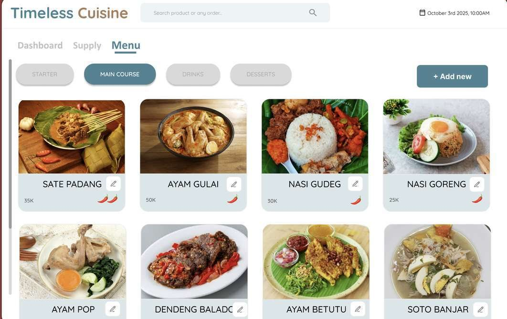

Systems AnalysisTeam academic project · September 2025
Timeless Cuisine Resto
A system analysis case study for an Indonesian restaurant. I analysed the business processes and requirements, then translated the findings into system diagrams and interface designs.
Read the case study